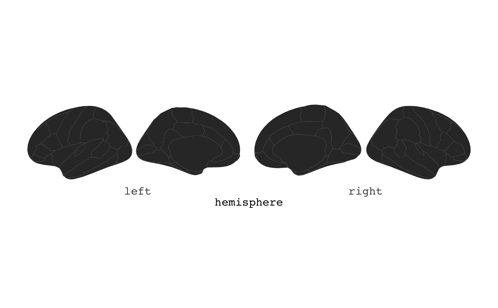
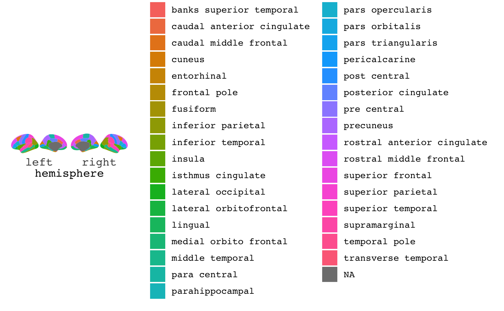
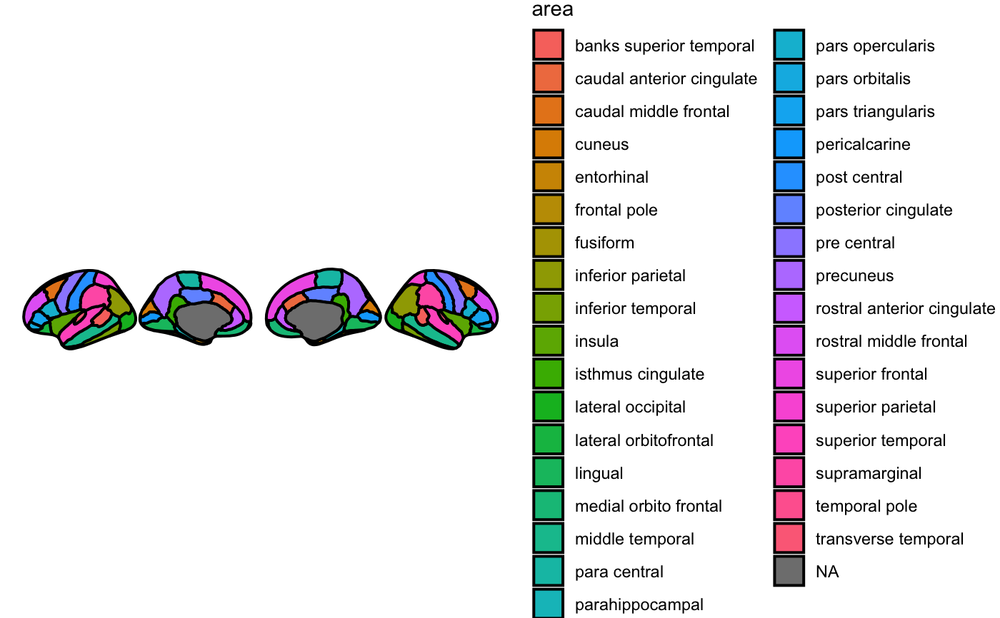
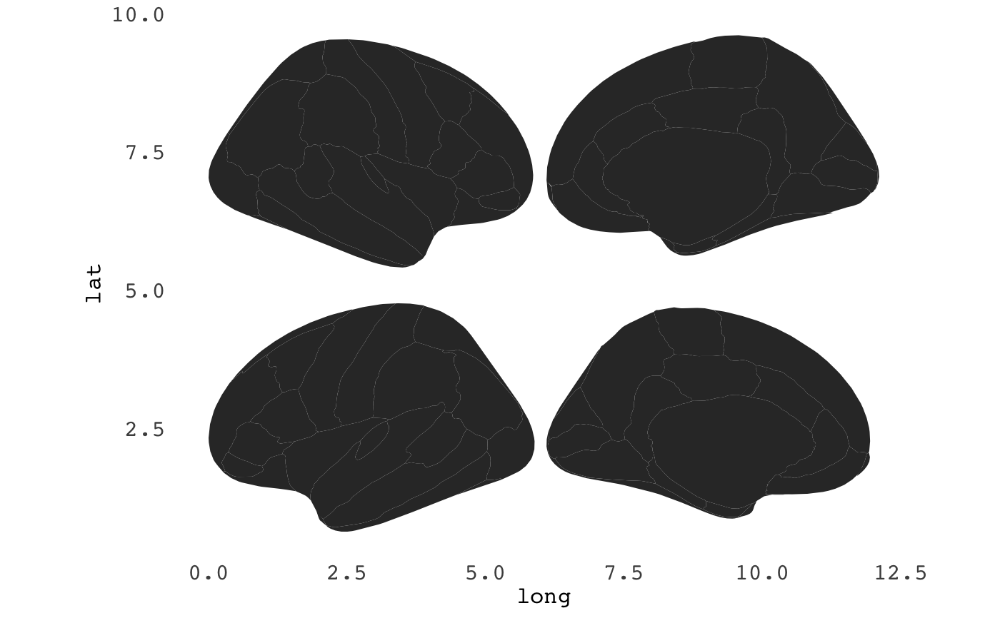
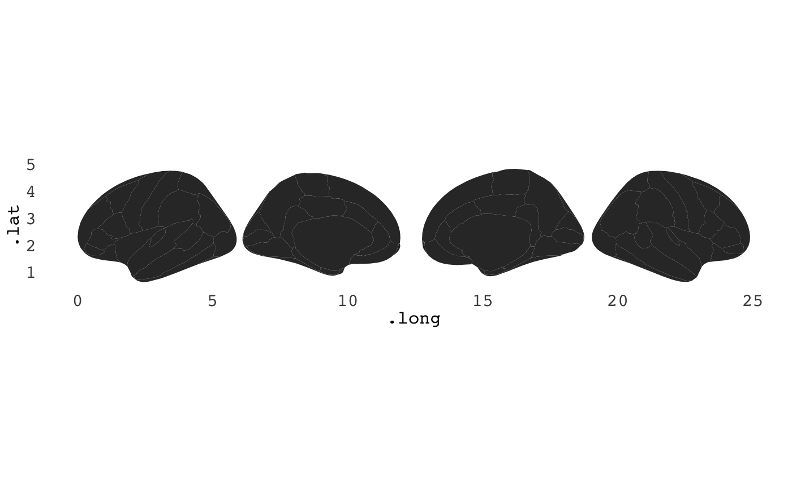

R/ggseg-package.R, R/ggseg.R
ggseg.RdPlotting results from analyses done on data derived from brain segmentations is a common need, but may be quite laborious. Results from such analyses are usually easier to interpret if the plot can mimmick the shape and position in the brain it represents.
ggseg plots and returns a ggplot object of plotted
aparc areas.
ggseg(.data = NULL, atlas = "dkt", position = "dispersed", view = NULL, hemisphere = NULL, adapt_scales = TRUE, ...)
| .data | A .data.frame to use for plot aesthetics. Should include a column called "area" corresponding to aparc areas. |
|---|---|
| atlas | Either a string with the name of atlas to use, or a .data.frame containing atlas information (i.e. pre-loaded atlas). |
| position | String choosing how to view the .data. Either "dispersed"[default] or "stacked". |
| view | String to choose view of the .data. Any of c("lateral","medial")[default]. |
| hemisphere | String to choose hemisphere to plot. Any of c("left","right")[default]. |
| adapt_scales | if |
| ... | other options sent to ggplot2::geom_polygon for plotting, including mapping aes (cannot include x, y, and group aethetics). |
a ggplot object
This package contains data from various brain parcellations, with convenient functions to inspect the results directly on a brain-plot wither with ggplot (2D polygons) or plotly (3d meshes).
The Desikan-Killiany Cortical Atlas [default], Freesurfer cortical segmentations.
Freesurfer automatic subcortical segmentation of a brain volume
Useful links:
[ggplot2][ggplot2::ggplot], [aes][ggplot2::aes], [geom_polygon][ggplot2::geom_polygon], [coord_fixed][ggplot2::coord_fixed]
ggseg(position = "stacked")ggseg(adapt_scales = FALSE)